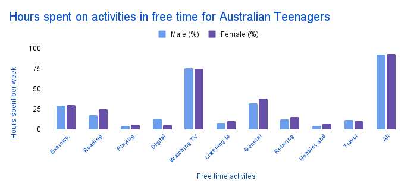

Screen Time
Analysis 3: What is screen time and why is it harmful?
Which continents have the highest social media addiction?
According to mixbloom.com, Asia is the continent with the most
social media users,
with 1,547,000 people using social media daily. This is most likely due to the high
population of Asia compared to other continents and the usage. Due to Asia having more than
1 billion people, companies tend to spend large amounts of money on marketing their
platforms to generate a higher income from advertisements.
Antarctica has the least social media usage, which is expected due to its being more
of a tourist location than a residential continent and the lack of internet availability
within Antarctica.
A common trend was that the higher the population, the higher amount of people using social
media such as Australia is the second-last, implying the spread of social media within
continents.
However, it is ironic that the quality of Wi-Fi and the internet is severely impacted within
Asia, with governments on the continent also banning specific platforms such as TikTok.
Hence, Alternatives to certain social media are prevalent and how simple it is to switch
within such countries.
What are the most addictive forms of social media?
The most addictive forms of social media can be identified based on daily usage rates and
age groups that have the most time on screens. According to the provided data, Facebook is
the most widely used platform, with 70% of people using it daily. Snapchat and Instagram
follow closely behind at 59%, while YouTube (54%) and Twitter (46%) have significant user
bases.
However, the most addictive platforms are likely Snapchat, Instagram, and TikTok because
they target younger audiences with the highest screen time. The age group 13-18 spends the
most time on social media (43.6 hours per week), with parents (39.4 hours) following closely
behind.
Additionally, Generation Z (born 1997-2012) spends the most time on screens (7.3 hours per
day). This makes them the most vulnerable to social media addiction. Millennials (6.7 hours)
and Generation X (6 hours) also have high usage. This supports the addictive nature of
social media, particularly platforms designed for frequent engagement and short-form
content.
How can social media addiction be stopped (once started) and prevented?
Stopping and preventing social media addiction requires both self-discipline and structured
strategies. Social media platforms are designed to be addictive by triggering the brain’s
dopamine system, and cutting back can lead to withdrawal symptoms like mood swings, boredom,
and anxiety. The best way to quit is through gradual reduction rather than cold turkey.
Reduce screen time in small steps, like cutting it down from four hours a day to three and a
half, then gradually decrease screen time. This can make the transition easier and more
sustainable.
Replacing social media with alternative activities is also crucial in overcoming addiction.
Engaging in hobbies such as playing sports, reading, painting or learning a musical
instrument can fill the time previously spent on social media. Physical activities provide a
natural dopamine boost, reducing the craving for digital interactions, reducing the time
they have to spend on social time and keeping them socialising and making talents that can
carry on.
hint: click a picture to make it bigger
which country has the most social media users?  hours spent on activities in free time for Australian teenagers types of bad experiences on social mediatable format for better readability:
| Experience | Percentage |
|---|---|
| Contacted by a stranger | 30% |
| Sent inappropriate content | 20% |
| Negative experiences (6 months) | 16% |
| Deliberately excluded from events | 16% |
| Damage to reputation | 15% |
| Online threats and abuse | 15% |
| Misused personal information | 8% |
| At least one negative experience | 44% |